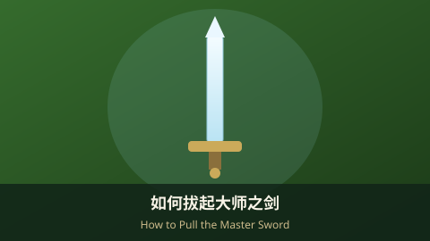

旷野之息Breath of the Wild
如何拔起大师之剑How to Pull the Master Sword
集齐 13 颗红心、找到迷雾森林深处的力量试炼，完整步骤带你拔出任天堂的传奇之剑。Gather 13 hearts and find the Trial of Power deep in the Lost Woods — a step-by-step path to Nintendo's legendary blade.